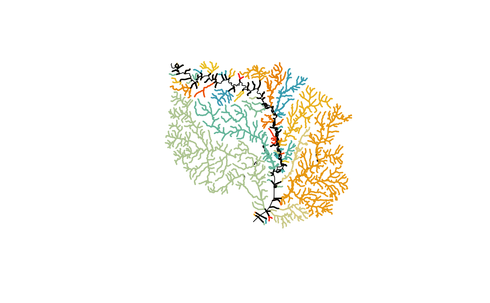

Cleans up and prepares NHDPlusHR regional data for use as complete NHDPlus data. The primary modification applied is to ensure that any flowpath that exits the domain is labeled as a terminal path and attributes are propagated upstream such that the domain is independently complete.
make_standalone(flowlines)sf data.frame containing standalone network
# \donttest{
library(dplyr)
library(sf)
source(system.file("extdata/nhdplushr_data.R", package = "nhdplusTools"))
(outlet <- filter(hr_data$NHDFlowline, Hydroseq == min(Hydroseq)))
#> Simple feature collection with 1 feature and 57 fields
#> Geometry type: LINESTRING
#> Dimension: XY
#> Bounding box: xmin: -79.01402 ymin: 35.79464 xmax: -79.00523 ymax: 35.80153
#> Geodetic CRS: GRS 1980(IUGG, 1980)
#> # A tibble: 1 × 58
#> Permanent_Identifier FDate Resolution GNIS_ID GNIS_Name LENGTHKM
#> * <chr> <dttm> <int> <chr> <chr> <dbl>
#> 1 46353268 2012-03-11 06:52:19 2 009910… New Hope… 1.10
#> # ℹ 52 more variables: REACHCODE <chr>, FlowDir <int>,
#> # WBArea_Permanent_Identifier <chr>, FTYPE <int>, FCODE <int>,
#> # MainPath <int>, InNetwork <int>, VisibilityFilter <int>,
#> # Shape_Length <dbl>, COMID <dbl>, VPUID <chr>, Enabled <int>,
#> # StreamLeve <dbl>, StreamOrde <dbl>, StreamCalc <dbl>, FromNode <dbl>,
#> # ToNode <dbl>, Hydroseq <dbl>, LevelPathI <dbl>, Pathlength <dbl>,
#> # TerminalPa <dbl>, ArbolateSu <dbl>, Divergence <dbl>, StartFlag <dbl>, …
nrow(filter(hr_data$NHDFlowline, TerminalPa == outlet$Hydroseq))
#> [1] 2691
hr_data$NHDFlowline <- make_standalone(hr_data$NHDFlowline)
(outlet <- filter(hr_data$NHDFlowline, Hydroseq == min(Hydroseq)))
#> Simple feature collection with 1 feature and 57 fields
#> Geometry type: LINESTRING
#> Dimension: XY
#> Bounding box: xmin: -79.01402 ymin: 35.79464 xmax: -79.00523 ymax: 35.80153
#> Geodetic CRS: GRS 1980(IUGG, 1980)
#> # A tibble: 1 × 58
#> Permanent_Identifier FDate Resolution GNIS_ID GNIS_Name LENGTHKM
#> * <chr> <dttm> <int> <chr> <chr> <dbl>
#> 1 46353268 2012-03-11 06:52:19 2 009910… New Hope… 1.10
#> # ℹ 52 more variables: REACHCODE <chr>, FlowDir <int>,
#> # WBArea_Permanent_Identifier <chr>, FTYPE <int>, FCODE <int>,
#> # MainPath <int>, InNetwork <int>, VisibilityFilter <int>,
#> # Shape_Length <dbl>, COMID <dbl>, VPUID <chr>, Enabled <int>,
#> # StreamLeve <dbl>, StreamOrde <dbl>, StreamCalc <dbl>, FromNode <dbl>,
#> # ToNode <dbl>, Hydroseq <dbl>, LevelPathI <dbl>, Pathlength <dbl>,
#> # TerminalPa <dbl>, ArbolateSu <dbl>, Divergence <dbl>, StartFlag <dbl>, …
nrow(filter(hr_data$NHDFlowline, TerminalPa == outlet$Hydroseq))
#> [1] 2691
source(system.file("extdata/nhdplushr_data.R", package = "nhdplusTools"))
# Remove mainstem and non-dendritic stuff.
subset <- filter(hr_data$NHDFlowline,
StreamLeve > min(hr_data$NHDFlowline$StreamLeve) &
StreamOrde == StreamCalc)
subset <- subset_nhdplus(subset$COMID, nhdplus_data = hr_gpkg)$NHDFlowline
#> All intersections performed in latitude/longitude.
#> Reading NHDFlowline
#> 1000 comids of 2182
#> 2000 comids of 2182
#> 2182 comids of 2182
#> Writing NHDFlowline
#> Reading NHDPlusCatchment
#> 1000 comids of 2182
#> 2000 comids of 2182
#> 2182 comids of 2182
#> Found invalid geometry, attempting to fix.
#> Writing NHDPlusCatchment
#> Reading NHDArea
#> Writing NHDArea
#> Reading NHDWaterbody
#> Writing NHDWaterbody
#> Reading NHDPlusSink
#> Writing NHDPlusSink
plot(sf::st_geometry(hr_data$NHDFlowline))
flowline_mod <- make_standalone(subset)
terminals <- unique(flowline_mod$TerminalPa)
colors <- sample(hcl.colors(length(terminals), palette = "Zissou 1"))
for(i in 1:length(terminals)) {
fl <- flowline_mod[flowline_mod$TerminalPa == terminals[i], ]
plot(st_geometry(fl), col = colors[i], lwd = 2, add = TRUE)
}
ol <- filter(flowline_mod, TerminalFl == 1 & TerminalPa %in% terminals)
plot(st_geometry(ol), lwd = 2, add = TRUE)

# }